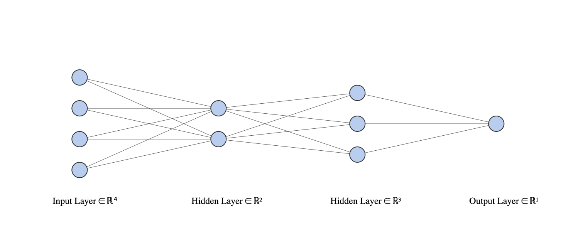
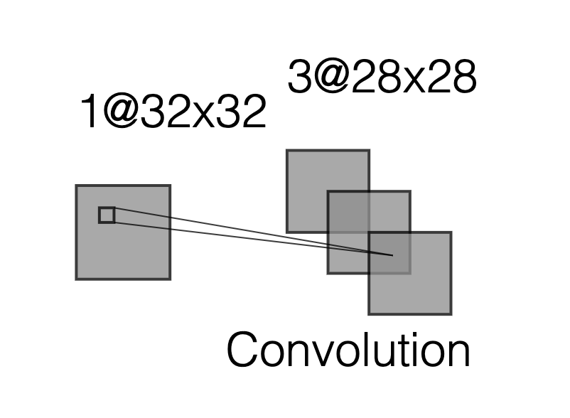
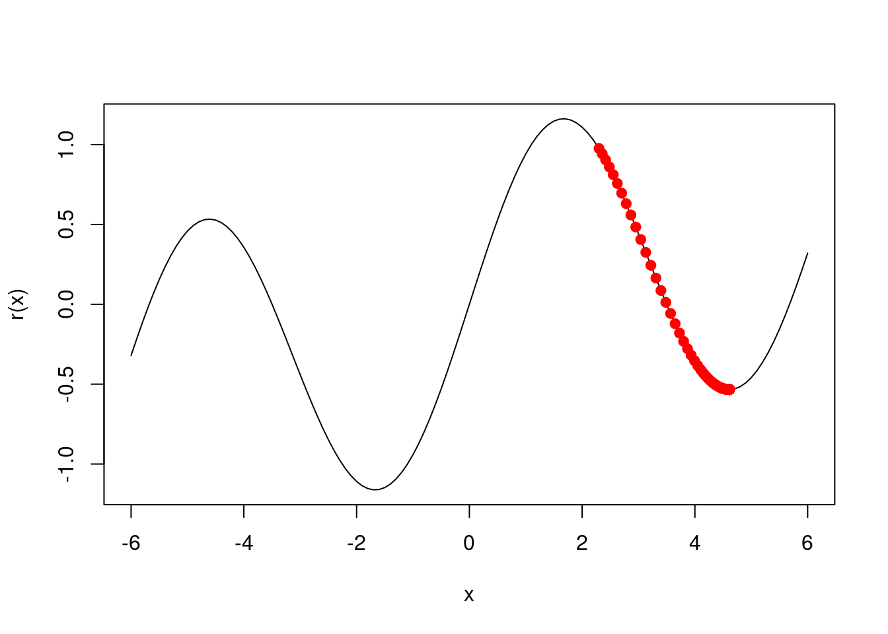
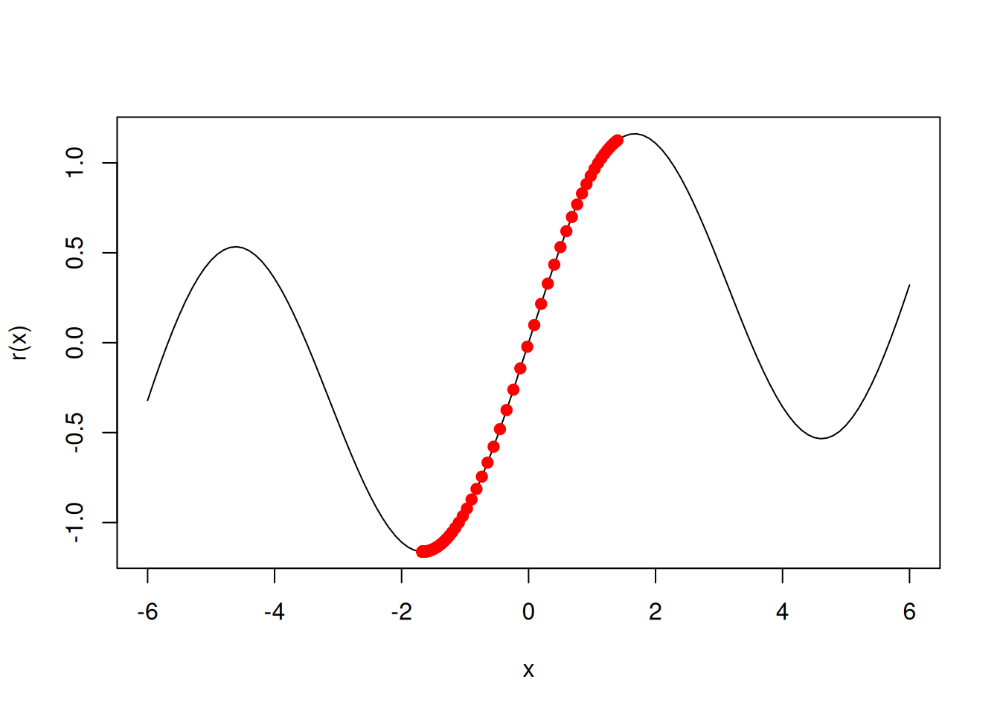
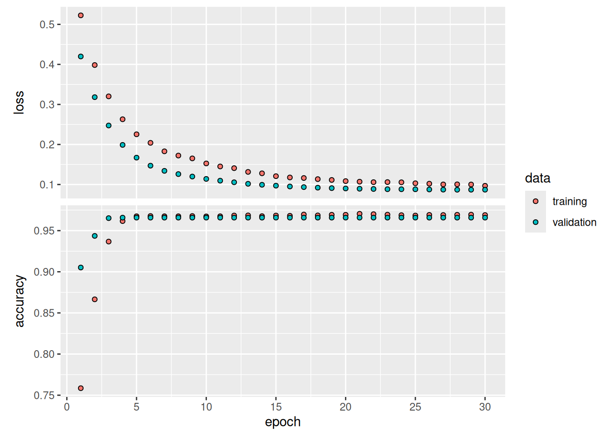
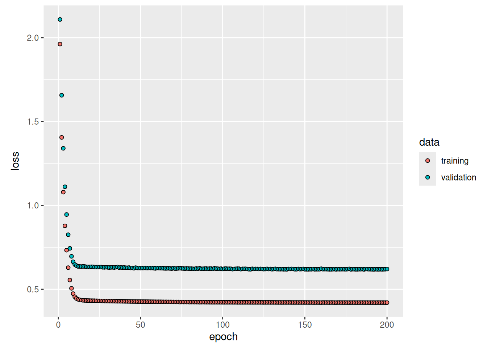

10 Deep Learning
10.1 Conceptual
10.1.1 Question 1
Consider a neural network with two hidden layers: \(p = 4\) input units, 2 units in the first hidden layer, 3 units in the second hidden layer, and a single output.
- Draw a picture of the network, similar to Figures 10.1 or 10.4.

- Write out an expression for \(f(X)\), assuming ReLU activation functions. Be as explicit as you can!
The three layers (from our final output layer back to the start of our network) can be described as:
\[\begin{align*} f(X) &= g(w_{0}^{(3)} + \sum^{K_2}_{l=1} w_{l}^{(3)} A_l^{(2)}) \\ A_l^{(2)} &= h_l^{(2)}(X) = g(w_{l0}^{(2)} + \sum_{k=1}^{K_1} w_{lk}^{(2)} A_k^{(1)})\\ A_k^{(1)} &= h_k^{(1)}(X) = g(w_{k0}^{(1)} + \sum_{j=1}^p w_{kj}^{(1)} X_j) \\ \end{align*}\]
for \(l = 1, ..., K_2 = 3\) and \(k = 1, ..., K_1 = 2\) and \(p = 4\), where,
\[ g(z) = (z)_+ = \begin{cases} 0, & \text{if } z < 0 \\ z, & \text{otherwise} \end{cases} \]
- Now plug in some values for the coefficients and write out the value of \(f(X)\).
We can perhaps achieve this most easily by fitting a real model. Note, in the plot shown here, we also include the “bias” or intercept terms.
library(ISLR2)
library(neuralnet)
library(sigmoid)
set.seed(5)
train <- sample(seq_len(nrow(ISLR2::Boston)), nrow(ISLR2::Boston) * 2 / 3)
net <- neuralnet(crim ~ lstat + medv + ptratio + rm,
data = ISLR2::Boston[train, ],
act.fct = relu,
hidden = c(2, 3)
)
plot(net)We can make a prediction for a given observation using this object.
Firstly, let’s find an “ambiguous” test sample
p <- predict(net, ISLR2::Boston[-train, ])
x <- ISLR2::Boston[-train, ][which.min(abs(p - mean(c(max(p), min(p))))), ]
x <- x[, c("lstat", "medv", "ptratio", "rm")]
predict(net, x)## [,1]
## 441 19.14392Or, repeating by “hand”:
g <- function(x) ifelse(x > 0, x, 0) # relu activation function
w <- net$weights[[1]] # the estimated weights for each layer
v <- as.numeric(x) # our input predictors
# to calculate our prediction we can take the dot product of our predictors
# (with 1 at the start for the bias term) and our layer weights, lw)
for (lw in w) v <- g(c(1, v) %*% lw)
v## [,1]
## [1,] 19.14392
- How many parameters are there?
## [1] 23There are \(4*2+2 + 2*3+3 + 3*1+1 = 23\) parameters.
10.1.2 Question 2
Consider the softmax function in (10.13) (see also (4.13) on page 141) for modeling multinomial probabilities.
- In (10.13), show that if we add a constant \(c\) to each of the \(z_l\), then the probability is unchanged.
If we add a constant \(c\) to each \(Z_l\) in equation 10.13 we get:
\[\begin{align*} Pr(Y=m|X) &= \frac{e^{Z_m+c}}{\sum_{l=0}^9e^{Z_l+c}} \\ &= \frac{e^{Z_m}e^c}{\sum_{l=0}^9e^{Z_l}e^c} \\ &= \frac{e^{Z_m}e^c}{e^c\sum_{l=0}^9e^{Z_l}} \\ &= \frac{e^{Z_m}}{\sum_{l=0}^9e^{Z_l}} \\ \end{align*}\]
which is just equation 10.13.
- In (4.13), show that if we add constants \(c_j\), \(j = 0,1,...,p\), to each of the corresponding coefficients for each of the classes, then the predictions at any new point \(x\) are unchanged.
4.13 is
\[ Pr(Y=k|X=x) = \frac {e^{\beta_{k0} + \beta_{k1}x_1 + ... + \beta_{kp}x_p}} {\sum_{l=1}^K e^{\beta_{l0} + \beta_{l1}x_1 + ... + \beta_{lp}x_p}} \]
adding constants \(c_j\) to the coefficients \(\beta_{kj}\) for every class \(k\) gives:
\[\begin{align*} Pr(Y=k|X=x) &= \frac {e^{(\beta_{k0} + c_0) + (\beta_{k1} + c_1)x_1 + ... + (\beta_{kp} + c_p)x_p}} {\sum_{l=1}^K e^{(\beta_{l0} + c_0) + (\beta_{l1} + c_1)x_1 + ... + (\beta_{lp} + c_p)x_p}} \\ &= \frac {e^{c_0 + c_1 x_1 + ... + c_p x_p} \, e^{\beta_{k0} + \beta_{k1}x_1 + ... + \beta_{kp}x_p}} {\sum_{l=1}^K e^{c_0 + c_1 x_1 + ... + c_p x_p} \, e^{\beta_{l0} + \beta_{l1}x_1 + ... + \beta_{lp}x_p}} \\ &= \frac {e^{c_0 + c_1 x_1 + ... + c_p x_p} \, e^{\beta_{k0} + \beta_{k1}x_1 + ... + \beta_{kp}x_p}} {e^{c_0 + c_1 x_1 + ... + c_p x_p} \sum_{l=1}^K e^{\beta_{l0} + \beta_{l1}x_1 + ... + \beta_{lp}x_p}} \\ &= \frac {e^{\beta_{k0} + \beta_{k1}x_1 + ... + \beta_{kp}x_p}} {\sum_{l=1}^K e^{\beta_{l0} + \beta_{l1}x_1 + ... + \beta_{lp}x_p}} \\ \end{align*}\]
The key step is that \(e^{c_0 + c_1 x_1 + ... + c_p x_p}\) depends on \(x\) but not on the class \(l\), so it factors out of the sum in the denominator and cancels with the same factor in the numerator. We recover 4.13.
This shows that the softmax function is over-parametrized. However, regularization and SGD typically constrain the solutions so that this is not a problem.
10.1.3 Question 3
Show that the negative multinomial log-likelihood (10.14) is equivalent to the negative log of the likelihood expression (4.5) when there are \(M = 2\) classes.
Equation 10.14 is
\[ -\sum_{i=1}^n \sum_{m=0}^9 y_{im}\log(f_m(x_i)) \]
Equation 4.5 is:
\[ \ell(\beta_0, \beta_1) = \prod_{i:y_i=1}p(x_i) \prod_{i':y_i'=0}(1-p(x_i')) \]
So, \(\log(\ell)\) is:
\[\begin{align*} \log(\ell) &= \log \left( \prod_{i:y_i=1}p(x_i) \prod_{i':y_i'=0}(1-p(x_i')) \right ) \\ &= \sum_{i:y_i=1}\log(p(x_i)) + \sum_{i':y_i'=0}\log(1-p(x_i')) \\ \end{align*}\]
If we set \(y_i\) to be an indicator variable such that \(y_{i1}\) and \(y_{i0}\) are 1 and 0 (or 0 and 1) when our \(i\)th observation is 1 (or 0) respectively, then we can write:
\[ \log(\ell) = \sum_{i}y_{i1}\log(p(x_i)) + \sum_{i}y_{i0}\log(1-p(x_i)) \]
If we also let \(f_1(x) = p(x)\) and \(f_0(x) = 1 - p(x)\) then:
\[\begin{align*} \log(\ell) &= \sum_i y_{i1}\log(f_1(x_i)) + \sum_{i}y_{i0}\log(f_0(x_i)) \\ &= \sum_i \sum_{m=0}^1 y_{im}\log(f_m(x_i)) \\ \end{align*}\]
When we take the negative of this, it is equivalent to 10.14 for two classes (\(m = 0,1\)).
10.1.4 Question 4
Consider a CNN that takes in \(32 \times 32\) grayscale images and has a single convolution layer with three \(5 \times 5\) convolution filters (without boundary padding).
- Draw a sketch of the input and first hidden layer similar to Figure 10.8.

Note that, because there is no boundary padding, each convolution layer will consist of a 28x28 array.
- How many parameters are in this model?
There are 3 convolution matrices each with 5x5 weights (plus 3 bias terms) to estimate, therefore \(3 \times 5 \times 5 + 3 = 78\) parameters
- Explain how this model can be thought of as an ordinary feed-forward neural network with the individual pixels as inputs, and with constraints on the weights in the hidden units. What are the constraints?
We can think of a convolution layer as a regularized fully connected layer. The regularization in this case is due to not all inputs being connected to all outputs, and weights being shared between connections.
Each output node in the convolved image can be thought of as taking inputs from a limited number of input pixels (the neighboring pixels), with a set of weights specified by the convolution layer which are then shared by the connections to all other output nodes.
- If there were no constraints, then how many weights would there be in the ordinary feed-forward neural network in (c)?
With no constraints, we would connect each input pixel in our original 32x32 image to each output pixel in each of our convolution layers, with a bias term for each output pixel. So each output pixel would require 32x32 weights + 1 bias term. This would give a total of (32×32+1)×28×28×3 = 2,410,800 parameters.
10.1.5 Question 5
In Table 10.2 on page 433, we see that the ordering of the three methods with respect to mean absolute error is different from the ordering with respect to test set \(R^2\). How can this be?
Mean absolute error considers absolute differences between predictions and observed values, whereas \(R^2\) considers the (normalized) sum of squared differences, thus larger errors contribute relatively more to \(R^2\) than mean absolute error.
10.2 Applied
10.2.1 Question 6
Consider the simple function \(R(\beta) = sin(\beta) + \beta/10\).
- Draw a graph of this function over the range \(\beta \in [-6, 6]\).
- What is the derivative of this function?
\[ cos(x) + 1/10 \]
- Given \(\beta^0 = 2.3\), run gradient descent to find a local minimum of \(R(\beta)\) using a learning rate of \(\rho = 0.1\). Show each of \(\beta^0, \beta^1, ...\) in your plot, as well as the final answer.
The derivative of our function, i.e. \(cos(x) + 1/10\) gives us the gradient for a given \(x\). For gradient descent, we move \(x\) a little in the opposite direction, for some learning rate \(\rho = 0.1\):
\[ x^{m+1} = x^m - \rho (cos(x^m) + 1/10) \]
iter <- function(x, rho) x - rho * (cos(x) + 1 / 10)
gd <- function(start, rho = 0.1) {
b <- start
v <- b
while (abs(b - iter(b, 0.1)) > 1e-8) {
b <- iter(b, 0.1)
v <- c(v, b)
}
v
}
res <- gd(2.3)
res[length(res)]## [1] 4.612221
- Repeat with \(\beta^0 = 1.4\).
## [1] -1.670964
10.2.2 Question 7
Fit a neural network to the
Defaultdata. Use a single hidden layer with 10 units, and dropout regularization. Have a look at Labs 10.9.1–10.9.2 for guidance. Compare the classification performance of your model with that of linear logistic regression.
## The keras package is deprecated. Please use the keras3 package instead.
## Alternatively, to continue using legacy keras, call `py_require_legacy_keras()`.set.seed(42)
dat <- ISLR2::Default
dat$default <- as.numeric(dat$default == "Yes")
x <- scale(model.matrix(default ~ . - 1, data = dat))
y <- dat$default
n <- nrow(dat)
ntest <- trunc(n / 3)
testid <- sample(seq_len(n), ntest)
# logistic regression
lfit <- glm(default ~ ., data = dat[-testid, ], family = "binomial")
lpred <- predict(lfit, dat[testid, ], type = "response") > 0.5
mean(lpred != y[testid])## [1] 0.02580258# keras
nn <- keras_model_sequential() |>
layer_dense(units = 10, activation = "relu", input_shape = ncol(x)) |>
layer_dropout(rate = 0.4) |>
layer_dense(units = 1, activation = "sigmoid")
compile(nn,
loss = "binary_crossentropy",
optimizer = optimizer_rmsprop(),
metrics = "accuracy"
)
history <- fit(nn,
x[-testid, ], y[-testid],
epochs = 30,
batch_size = 128,
validation_data = list(x[testid, ], y[testid]),
verbose = 0
)
plot(history, smooth = FALSE)
## 105/105 - 0s - 269ms/epoch - 3ms/step## [1] 0.03420342In this case, logistic regression and the neural network achieve comparable
test-set classification error on the Default data. The classes are highly
imbalanced (only ~3% defaults), so both models are close to the naive baseline
of always predicting “No”.
10.2.3 Question 8
From your collection of personal photographs, pick 10 images of animals (such as dogs, cats, birds, farm animals, etc.). If the subject does not occupy a reasonable part of the image, then crop the image. Now use a pretrained image classification CNN as in Lab 10.9.4 to predict the class of each of your images, and report the probabilities for the top five predicted classes for each image.
## The keras package is deprecated. Please use the keras3 package instead.
## Alternatively, to continue using legacy keras, call `py_require_legacy_keras()`.images <- list.files("images/animals")
x <- array(dim = c(length(images), 224, 224, 3))
for (i in seq_len(length(images))) {
img <- image_load(paste0("images/animals/", images[i]), target_size = c(224, 224))
x[i, , , ] <- image_to_array(img)
}
model <- application_resnet50(weights = "imagenet")## Downloading data from https://storage.googleapis.com/tensorflow/keras-applications/resnet/resnet50_weights_tf_dim_ordering_tf_kernels.h5
##
8192/102967424 [..............................] - ETA: 0s
3842048/102967424 [>.............................] - ETA: 1s
8478720/102967424 [=>............................] - ETA: 1s
21118976/102967424 [=====>........................] - ETA: 0s
33603584/102967424 [========>.....................] - ETA: 0s
44171264/102967424 [===========>..................] - ETA: 0s
54493184/102967424 [==============>...............] - ETA: 0s
67149824/102967424 [==================>...........] - ETA: 0s
76169216/102967424 [=====================>........] - ETA: 0s
87965696/102967424 [========================>.....] - ETA: 0s
100229120/102967424 [============================>.] - ETA: 0s
102967424/102967424 [==============================] - 1s 0us/step## 1/1 - 11s - 11s/epoch - 11s/step
## Downloading data from https://storage.googleapis.com/download.tensorflow.org/data/imagenet_class_index.json
##
8192/35363 [=====>........................] - ETA: 0s
35363/35363 [==============================] - 0s 0us/step## $bird.jpg
## class_name class_description score
## 1 n01819313 sulphur-crested_cockatoo 0.33546284
## 2 n01580077 jay 0.18020947
## 3 n02441942 weasel 0.08320838
## 4 n02058221 albatross 0.07002078
## 5 n01855672 goose 0.05195722
##
## $bird2.jpg
## class_name class_description score
## 1 n02006656 spoonbill 0.840428114
## 2 n02012849 crane 0.016258713
## 3 n01819313 sulphur-crested_cockatoo 0.009740712
## 4 n02007558 flamingo 0.007816177
## 5 n01667778 terrapin 0.007497442
##
## $bird3.jpg
## class_name class_description score
## 1 n01833805 hummingbird 0.976787806
## 2 n02033041 dowitcher 0.011125583
## 3 n02028035 redshank 0.004276489
## 4 n02009229 little_blue_heron 0.001272773
## 5 n02002724 black_stork 0.000897144
##
## $bug.jpg
## class_name class_description score
## 1 n02190166 fly 0.67558581
## 2 n02167151 ground_beetle 0.10096999
## 3 n02172182 dung_beetle 0.05490853
## 4 n02169497 leaf_beetle 0.03541910
## 5 n02168699 long-horned_beetle 0.03515285
##
## $butterfly.jpg
## class_name class_description score
## 1 n02951585 can_opener 0.20600405
## 2 n03476684 hair_slide 0.09360628
## 3 n04074963 remote_control 0.06316894
## 4 n02110185 Siberian_husky 0.05178944
## 5 n02123597 Siamese_cat 0.03785329
##
## $butterfly2.jpg
## class_name class_description score
## 1 n02276258 admiral 9.999690e-01
## 2 n01580077 jay 1.388066e-05
## 3 n02277742 ringlet 1.235032e-05
## 4 n02279972 monarch 3.037847e-06
## 5 n02281787 lycaenid 1.261879e-06
##
## $elba.jpg
## class_name class_description score
## 1 n02085620 Chihuahua 0.29892027
## 2 n02091032 Italian_greyhound 0.20332775
## 3 n02109961 Eskimo_dog 0.08477212
## 4 n02086910 papillon 0.05140312
## 5 n02110185 Siberian_husky 0.05064506
##
## $hamish.jpg
## class_name class_description score
## 1 n02097209 standard_schnauzer 0.6361452341
## 2 n02097047 miniature_schnauzer 0.3450846374
## 3 n02097130 giant_schnauzer 0.0164217800
## 4 n02097298 Scotch_terrier 0.0019116015
## 5 n02096177 cairn 0.0002054315
##
## $poodle.jpg
## class_name class_description score
## 1 n02113799 standard_poodle 0.829670548
## 2 n02088094 Afghan_hound 0.074568093
## 3 n02113712 miniature_poodle 0.032005642
## 4 n02102973 Irish_water_spaniel 0.018583197
## 5 n02102318 cocker_spaniel 0.008629751
##
## $tortoise.jpg
## class_name class_description score
## 1 n04033995 quilt 0.28395954
## 2 n02110958 pug 0.15959522
## 3 n03188531 diaper 0.14018101
## 4 n02108915 French_bulldog 0.09364153
## 5 n04235860 sleeping_bag 0.0260839110.2.4 Question 9
Fit a lag-5 autoregressive model to the
NYSEdata, as described in the text and Lab 10.9.6. Refit the model with a 12-level factor representing the month. Does this factor improve the performance of the model?
Fitting the model as described in the text.
## ── Attaching core tidyverse packages ──────────────────────── tidyverse 2.0.0 ──
## ✔ dplyr 1.2.1 ✔ readr 2.2.0
## ✔ forcats 1.0.1 ✔ stringr 1.6.0
## ✔ ggplot2 4.0.3 ✔ tibble 3.3.1
## ✔ lubridate 1.9.5 ✔ tidyr 1.3.2
## ✔ purrr 1.2.2
## ── Conflicts ────────────────────────────────────────── tidyverse_conflicts() ──
## ✖ dplyr::compute() masks neuralnet::compute()
## ✖ dplyr::filter() masks stats::filter()
## ✖ dplyr::lag() masks stats::lag()
## ℹ Use the conflicted package (<http://conflicted.r-lib.org/>) to force all conflicts to become errorslibrary(ISLR2)
xdata <- data.matrix(NYSE[, c("DJ_return", "log_volume", "log_volatility")])
istrain <- NYSE[, "train"]
xdata <- scale(xdata)
lagm <- function(x, k = 1) {
n <- nrow(x)
pad <- matrix(NA, k, ncol(x))
rbind(pad, x[1:(n - k), ])
}
arframe <- data.frame(
log_volume = xdata[, "log_volume"],
L1 = lagm(xdata, 1),
L2 = lagm(xdata, 2),
L3 = lagm(xdata, 3),
L4 = lagm(xdata, 4),
L5 = lagm(xdata, 5)
)
arframe <- arframe[-(1:5), ]
istrain <- istrain[-(1:5)]
arfit <- lm(log_volume ~ ., data = arframe[istrain, ])
arpred <- predict(arfit, arframe[!istrain, ])
V0 <- var(arframe[!istrain, "log_volume"])
1 - mean((arpred - arframe[!istrain, "log_volume"])^2) / V0## [1] 0.413223Now we add month (and work with tidyverse).
arframe$month <- as.factor(str_match(NYSE$date, "-(\\d+)-")[, 2])[-(1:5)]
arfit2 <- lm(log_volume ~ ., data = arframe[istrain, ])
arpred2 <- predict(arfit2, arframe[!istrain, ])
V0 <- var(arframe[!istrain, "log_volume"])
1 - mean((arpred2 - arframe[!istrain, "log_volume"])^2) / V0## [1] 0.4170418Adding month as a factor marginally improves the \(R^2\) of our model (from 0.413223 to 0.4170418). This is a significant improvement in fit and model 2 has a lower AIC.
## Analysis of Variance Table
##
## Model 1: log_volume ~ L1.DJ_return + L1.log_volume + L1.log_volatility +
## L2.DJ_return + L2.log_volume + L2.log_volatility + L3.DJ_return +
## L3.log_volume + L3.log_volatility + L4.DJ_return + L4.log_volume +
## L4.log_volatility + L5.DJ_return + L5.log_volume + L5.log_volatility
## Model 2: log_volume ~ L1.DJ_return + L1.log_volume + L1.log_volatility +
## L2.DJ_return + L2.log_volume + L2.log_volatility + L3.DJ_return +
## L3.log_volume + L3.log_volatility + L4.DJ_return + L4.log_volume +
## L4.log_volatility + L5.DJ_return + L5.log_volume + L5.log_volatility +
## month
## Res.Df RSS Df Sum of Sq F Pr(>F)
## 1 4260 1791.0
## 2 4249 1775.8 11 15.278 3.3234 0.000143 ***
## ---
## Signif. codes: 0 '***' 0.001 '**' 0.01 '*' 0.05 '.' 0.1 ' ' 1## df AIC
## arfit 17 8447.663
## arfit2 28 8433.03110.2.5 Question 10
In Section 10.9.6, we showed how to fit a linear AR model to the
NYSEdata using thelm()function. However, we also mentioned that we can “flatten” the short sequences produced for the RNN model in order to fit a linear AR model. Use this latter approach to fit a linear AR model to the NYSE data. Compare the test \(R^2\) of this linear AR model to that of the linear AR model that we fit in the lab. What are the advantages/disadvantages of each approach?
The lm model is the same as that fit above:
arfit <- lm(log_volume ~ ., data = arframe[istrain, ])
arpred <- predict(arfit, arframe[!istrain, ])
V0 <- var(arframe[!istrain, "log_volume"])
1 - mean((arpred - arframe[!istrain, "log_volume"])^2) / V0## [1] 0.4170418Now we reshape the data for the RNN
n <- nrow(arframe)
xrnn <- data.matrix(arframe[, -1])
xrnn <- array(xrnn, c(n, 3, 5))
xrnn <- xrnn[, , 5:1]
xrnn <- aperm(xrnn, c(1, 3, 2))We can add a “flatten” layer to turn the reshaped data into a long vector of predictors resulting in a linear AR model.
Now let’s fit this model.
model |>
compile(optimizer = optimizer_rmsprop(), loss = "mse")
history <- model |>
fit(
xrnn[istrain, , ],
arframe[istrain, "log_volume"],
batch_size = 64,
epochs = 200,
validation_data = list(xrnn[!istrain, , ], arframe[!istrain, "log_volume"]),
verbose = 0
)
plot(history, smooth = FALSE)
## 56/56 - 0s - 110ms/epoch - 2ms/step## [1] 0.4104141Both models estimate the same number of coefficients/weights (16):
## (Intercept) L1.DJ_return L1.log_volume L1.log_volatility
## 0.067916689 0.094410214 0.498673056 0.586274266
## L2.DJ_return L2.log_volume L2.log_volatility L3.DJ_return
## -0.027299158 0.036903027 -0.931509135 0.037995916
## L3.log_volume L3.log_volatility L4.DJ_return L4.log_volume
## 0.070312741 0.216160520 -0.004954842 0.117079461
## L4.log_volatility L5.DJ_return L5.log_volume L5.log_volatility
## -0.039752786 -0.029620296 0.096034795 0.144510264
## month02 month03 month04 month05
## -0.100003367 -0.143781381 -0.028242819 -0.131120579
## month06 month07 month08 month09
## -0.125993911 -0.141608808 -0.163030102 -0.018889698
## month10 month11 month12
## -0.017206826 -0.037298183 0.008361380## [[1]]
## [,1]
## [1,] -0.028553415
## [2,] 0.099494688
## [3,] 0.161052659
## [4,] -0.004804593
## [5,] 0.121096551
## [6,] -0.028401205
## [7,] 0.038102575
## [8,] 0.083269477
## [9,] 0.160179600
## [10,] -0.028694041
## [11,] 0.040468145
## [12,] -0.817839026
## [13,] 0.094464689
## [14,] 0.514620125
## [15,] 0.518470287
##
## [[2]]
## [1] -0.005370542The flattened RNN has a lower \(R^2\) on the test data than our lm model
above. The lm model is quicker to fit and conceptually simpler also
giving us the ability to inspect the coefficients for different variables.
The flattened RNN is regularized to some extent as data are processed in batches.
10.2.6 Question 11
Repeat the previous exercise, but now fit a nonlinear AR model by “flattening” the short sequences produced for the RNN model.
From the book:
To fit a nonlinear AR model, we could add in a hidden layer.
xfun::cache_rds({
model <- keras_model_sequential() |>
layer_flatten(input_shape = c(5, 3)) |>
layer_dense(units = 32, activation = "relu") |>
layer_dropout(rate = 0.4) |>
layer_dense(units = 1)
model |> compile(
loss = "mse",
optimizer = optimizer_rmsprop(),
metrics = "mse"
)
history <- model |>
fit(
xrnn[istrain, , ],
arframe[istrain, "log_volume"],
batch_size = 64,
epochs = 200,
validation_data = list(xrnn[!istrain, , ], arframe[!istrain, "log_volume"]),
verbose = 0
)
plot(history, smooth = FALSE, metrics = "mse")
kpred <- predict(model, xrnn[!istrain, , ])
1 - mean((kpred - arframe[!istrain, "log_volume"])^2) / V0
})## [1] 0.4203238This approach improves our \(R^2\) over the linear model above.
10.2.7 Question 12
Consider the RNN fit to the
NYSEdata in Section 10.9.6. Modify the code to allow inclusion of the variableday_of_week, and fit the RNN. Compute the test \(R^2\).
To accomplish this, I’ll include day of the week as one of the lagged variables in the RNN. Thus, our input for each observation will be 4 x 5 (rather than 3 x 5).
xfun::cache_rds({
xdata <- data.matrix(
NYSE[, c("day_of_week", "DJ_return", "log_volume", "log_volatility")]
)
istrain <- NYSE[, "train"]
xdata <- scale(xdata)
arframe <- data.frame(
log_volume = xdata[, "log_volume"],
L1 = lagm(xdata, 1),
L2 = lagm(xdata, 2),
L3 = lagm(xdata, 3),
L4 = lagm(xdata, 4),
L5 = lagm(xdata, 5)
)
arframe <- arframe[-(1:5), ]
istrain <- istrain[-(1:5)]
n <- nrow(arframe)
xrnn <- data.matrix(arframe[, -1])
xrnn <- array(xrnn, c(n, 4, 5))
xrnn <- xrnn[, , 5:1]
xrnn <- aperm(xrnn, c(1, 3, 2))
dim(xrnn)
model <- keras_model_sequential() |>
layer_simple_rnn(
units = 12,
input_shape = list(5, 4),
dropout = 0.1,
recurrent_dropout = 0.1
) |>
layer_dense(units = 1)
model |> compile(optimizer = optimizer_rmsprop(), loss = "mse")
history <- model |>
fit(
xrnn[istrain, , ],
arframe[istrain, "log_volume"],
batch_size = 64,
epochs = 200,
validation_data = list(xrnn[!istrain, , ], arframe[!istrain, "log_volume"]),
verbose = 0
)
kpred <- predict(model, xrnn[!istrain, , ])
1 - mean((kpred - arframe[!istrain, "log_volume"])^2) / V0
})## [1] 0.446721510.2.8 Question 13
Repeat the analysis of Lab 10.9.5 on the
IMDbdata using a similarly structured neural network. There we used a dictionary of size 10,000. Consider the effects of varying the dictionary size. Try the values 1000, 3000, 5000, and 10,000, and compare the results.
xfun::cache_rds({
library(knitr)
accuracy <- c()
for (max_features in c(1000, 3000, 5000, 10000)) {
imdb <- dataset_imdb(num_words = max_features)
c(c(x_train, y_train), c(x_test, y_test)) %<-% imdb
maxlen <- 500
x_train <- pad_sequences(x_train, maxlen = maxlen)
x_test <- pad_sequences(x_test, maxlen = maxlen)
model <- keras_model_sequential() |>
layer_embedding(input_dim = max_features, output_dim = 32) |>
layer_lstm(units = 32) |>
layer_dense(units = 1, activation = "sigmoid")
model |> compile(
optimizer = "rmsprop",
loss = "binary_crossentropy",
metrics = "acc"
)
history <- fit(model, x_train, y_train,
epochs = 10,
batch_size = 128,
validation_data = list(x_test, y_test),
verbose = 0
)
predy <- predict(model, x_test) > 0.5
accuracy <- c(accuracy, mean(abs(y_test == as.numeric(predy))))
}
tibble(
"Max Features" = c(1000, 3000, 5000, 10000),
"Accuracy" = accuracy
) |>
kable()
})| Max Features | Accuracy |
|---|---|
| 1000 | 0.85356 |
| 3000 | 0.86064 |
| 5000 | 0.86776 |
| 10000 | 0.87104 |
Varying the dictionary size does not make a substantial impact on our estimates of accuracy. However, the models do take a substantial amount of time to fit and it is not clear we are finding the best fitting models in each case. For example, the model using a dictionary size of 10,000 obtained an accuracy of 0.8721 in the text which is as different from the estimate obtained here as are the differences between the models with different dictionary sizes.